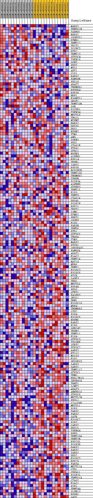
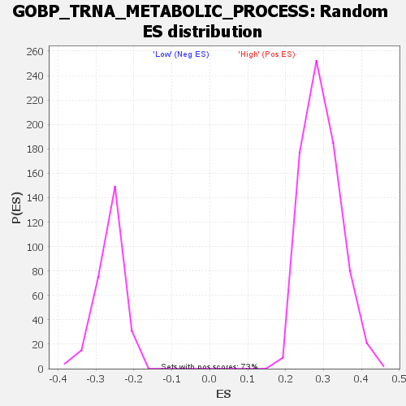

Profile of the Running ES Score & Positions of GeneSet Members on the Rank Ordered List
| Dataset | WG6v3.CYGB.cls#High_versus_Low.CYGB.cls#High_versus_Low_repos |
| Phenotype | CYGB.cls#High_versus_Low_repos |
| Upregulated in class | Low |
| GeneSet | GOBP_TRNA_METABOLIC_PROCESS |
| Enrichment Score (ES) | -0.48290443 |
| Normalized Enrichment Score (NES) | -1.8302819 |
| Nominal p-value | 0.0 |
| FDR q-value | 0.1301071 |
| FWER p-Value | 0.706 |
| SYMBOL | TITLE | RANK IN GENE LIST | RANK METRIC SCORE | RUNNING ES | CORE ENRICHMENT | |
|---|---|---|---|---|---|---|
| 1 | WARS2 | WARS2 | 1199 | 0.091 | -0.0468 | No |
| 2 | TRMT61B | TRMT61B | 1508 | 0.076 | -0.0500 | No |
| 3 | TARBP1 | TARBP1 | 1619 | 0.071 | -0.0436 | No |
| 4 | NARS2 | NARS2 | 2041 | 0.058 | -0.0557 | No |
| 5 | OSGEPL1 | OSGEPL1 | 2336 | 0.050 | -0.0625 | No |
| 6 | DTWD1 | DTWD1 | 2386 | 0.049 | -0.0569 | No |
| 7 | TRMT12 | TRMT12 | 2488 | 0.046 | -0.0543 | No |
| 8 | TRIT1 | TRIT1 | 2619 | 0.044 | -0.0536 | No |
| 9 | ZCCHC7 | ZCCHC7 | 3467 | 0.029 | -0.0926 | No |
| 10 | DTD2 | DTD2 | 3577 | 0.028 | -0.0936 | No |
| 11 | TRMT13 | TRMT13 | 3742 | 0.026 | -0.0977 | No |
| 12 | GTF3C4 | GTF3C4 | 3869 | 0.025 | -0.1000 | No |
| 13 | TSEN15 | TSEN15 | 4086 | 0.023 | -0.1073 | No |
| 14 | GON7 | GON7 | 4089 | 0.023 | -0.1036 | No |
| 15 | PUS7 | PUS7 | 4164 | 0.022 | -0.1037 | No |
| 16 | MTO1 | MTO1 | 4329 | 0.020 | -0.1088 | No |
| 17 | AKT1 | AKT1 | 4410 | 0.020 | -0.1096 | No |
| 18 | CLP1 | CLP1 | 4635 | 0.018 | -0.1182 | No |
| 19 | RARS2 | RARS2 | 4820 | 0.016 | -0.1250 | No |
| 20 | FAM98B | FAM98B | 4889 | 0.016 | -0.1258 | No |
| 21 | PUS10 | PUS10 | 5240 | 0.013 | -0.1417 | No |
| 22 | ADAT2 | ADAT2 | 5411 | 0.012 | -0.1485 | No |
| 23 | THUMPD1 | THUMPD1 | 5527 | 0.012 | -0.1524 | No |
| 24 | RPUSD4 | RPUSD4 | 5642 | 0.011 | -0.1565 | No |
| 25 | RPP30 | RPP30 | 5768 | 0.010 | -0.1612 | No |
| 26 | BRF1 | BRF1 | 5851 | 0.010 | -0.1638 | No |
| 27 | B3GNTL1 | B3GNTL1 | 6127 | 0.009 | -0.1765 | No |
| 28 | GRSF1 | GRSF1 | 6164 | 0.009 | -0.1769 | No |
| 29 | TRMT10B | TRMT10B | 6307 | 0.008 | -0.1829 | No |
| 30 | SSB | SSB | 6379 | 0.008 | -0.1853 | No |
| 31 | DICER1 | DICER1 | 6463 | 0.007 | -0.1883 | No |
| 32 | TSEN34 | TSEN34 | 6710 | 0.006 | -0.2000 | No |
| 33 | METTL8 | METTL8 | 6716 | 0.006 | -0.1992 | No |
| 34 | THG1L | THG1L | 7019 | 0.005 | -0.2140 | No |
| 35 | MTFMT | MTFMT | 7087 | 0.005 | -0.2166 | No |
| 36 | HARS2 | HARS2 | 7179 | 0.005 | -0.2206 | No |
| 37 | DUS3L | DUS3L | 7438 | 0.004 | -0.2334 | No |
| 38 | DDX1 | DDX1 | 7566 | 0.003 | -0.2394 | No |
| 39 | NSUN2 | NSUN2 | 7585 | 0.003 | -0.2398 | No |
| 40 | TYW1 | TYW1 | 7874 | 0.002 | -0.2544 | No |
| 41 | ANG | ANG | 7969 | 0.002 | -0.2590 | No |
| 42 | TSEN2 | TSEN2 | 7986 | 0.002 | -0.2595 | No |
| 43 | PUS1 | PUS1 | 8752 | -0.001 | -0.2991 | No |
| 44 | CTAG1B | CTAG1B | 9173 | -0.002 | -0.3206 | No |
| 45 | FTSJ1 | FTSJ1 | 9272 | -0.002 | -0.3253 | No |
| 46 | GTDC1 | GTDC1 | 9328 | -0.003 | -0.3277 | No |
| 47 | NSUN3 | NSUN3 | 9420 | -0.003 | -0.3320 | No |
| 48 | ALKBH1 | ALKBH1 | 9434 | -0.003 | -0.3322 | No |
| 49 | RPP14 | RPP14 | 9669 | -0.004 | -0.3437 | No |
| 50 | TRUB1 | TRUB1 | 10160 | -0.005 | -0.3683 | No |
| 51 | IARS2 | IARS2 | 10170 | -0.005 | -0.3678 | No |
| 52 | RPP38 | RPP38 | 10213 | -0.005 | -0.3691 | No |
| 53 | BCDIN3D | BCDIN3D | 10431 | -0.006 | -0.3793 | No |
| 54 | TRMT10C | TRMT10C | 10483 | -0.007 | -0.3808 | No |
| 55 | THUMPD2 | THUMPD2 | 10534 | -0.007 | -0.3823 | No |
| 56 | TPRKB | TPRKB | 10539 | -0.007 | -0.3814 | No |
| 57 | POLR3A | POLR3A | 10760 | -0.007 | -0.3915 | No |
| 58 | ALKBH8 | ALKBH8 | 10836 | -0.008 | -0.3941 | No |
| 59 | GTPBP3 | GTPBP3 | 10867 | -0.008 | -0.3944 | No |
| 60 | TRMT1L | TRMT1L | 10884 | -0.008 | -0.3938 | No |
| 61 | ELP3 | ELP3 | 10885 | -0.008 | -0.3925 | No |
| 62 | TRMT5 | TRMT5 | 10929 | -0.008 | -0.3934 | No |
| 63 | CTAG1A | CTAG1A | 11564 | -0.010 | -0.4245 | No |
| 64 | DUS4L | DUS4L | 11565 | -0.010 | -0.4227 | No |
| 65 | POLR2F | POLR2F | 11724 | -0.011 | -0.4291 | No |
| 66 | RPP21 | RPP21 | 11808 | -0.011 | -0.4314 | No |
| 67 | TRPT1 | TRPT1 | 12110 | -0.013 | -0.4449 | No |
| 68 | LSM6 | LSM6 | 12120 | -0.013 | -0.4432 | No |
| 69 | DTWD2 | DTWD2 | 12233 | -0.013 | -0.4468 | No |
| 70 | PNPT1 | PNPT1 | 12340 | -0.014 | -0.4500 | No |
| 71 | OSGEP | OSGEP | 12372 | -0.014 | -0.4493 | No |
| 72 | ELP6 | ELP6 | 12481 | -0.014 | -0.4524 | No |
| 73 | FARSB | FARSB | 12637 | -0.015 | -0.4579 | No |
| 74 | TRMT6 | TRMT6 | 12642 | -0.015 | -0.4556 | No |
| 75 | DTD1 | DTD1 | 12796 | -0.016 | -0.4608 | No |
| 76 | GTF3C6 | GTF3C6 | 12957 | -0.017 | -0.4663 | No |
| 77 | THADA | THADA | 13053 | -0.017 | -0.4683 | No |
| 78 | TYW3 | TYW3 | 13096 | -0.017 | -0.4676 | No |
| 79 | MARS2 | MARS2 | 13314 | -0.019 | -0.4757 | No |
| 80 | PTCD1 | PTCD1 | 13377 | -0.019 | -0.4757 | No |
| 81 | CDK5RAP1 | CDK5RAP1 | 13417 | -0.019 | -0.4744 | No |
| 82 | FAM98A | FAM98A | 13517 | -0.020 | -0.4762 | No |
| 83 | ADAT1 | ADAT1 | 13647 | -0.021 | -0.4794 | Yes |
| 84 | ELAC2 | ELAC2 | 13679 | -0.021 | -0.4774 | Yes |
| 85 | TRMT2A | TRMT2A | 13749 | -0.022 | -0.4773 | Yes |
| 86 | NAT10 | NAT10 | 13762 | -0.022 | -0.4743 | Yes |
| 87 | WDR6 | WDR6 | 13764 | -0.022 | -0.4707 | Yes |
| 88 | TRMT1 | TRMT1 | 13801 | -0.022 | -0.4689 | Yes |
| 89 | EXOSC3 | EXOSC3 | 13805 | -0.022 | -0.4653 | Yes |
| 90 | EXOSC8 | EXOSC8 | 13891 | -0.022 | -0.4660 | Yes |
| 91 | RTCB | RTCB | 13912 | -0.022 | -0.4632 | Yes |
| 92 | LAGE3 | LAGE3 | 13945 | -0.023 | -0.4610 | Yes |
| 93 | YRDC | YRDC | 13970 | -0.023 | -0.4584 | Yes |
| 94 | METTL6 | METTL6 | 14003 | -0.023 | -0.4561 | Yes |
| 95 | RPP40 | RPP40 | 14056 | -0.023 | -0.4549 | Yes |
| 96 | PUS3 | PUS3 | 14144 | -0.024 | -0.4553 | Yes |
| 97 | QTRT1 | QTRT1 | 14173 | -0.024 | -0.4527 | Yes |
| 98 | DALRD3 | DALRD3 | 14210 | -0.025 | -0.4504 | Yes |
| 99 | QRSL1 | QRSL1 | 14356 | -0.026 | -0.4536 | Yes |
| 100 | URM1 | URM1 | 14416 | -0.026 | -0.4522 | Yes |
| 101 | EXOSC10 | EXOSC10 | 14613 | -0.028 | -0.4577 | Yes |
| 102 | WDR4 | WDR4 | 14660 | -0.028 | -0.4554 | Yes |
| 103 | THUMPD3 | THUMPD3 | 14703 | -0.028 | -0.4528 | Yes |
| 104 | CTU2 | CTU2 | 14750 | -0.029 | -0.4503 | Yes |
| 105 | POP4 | POP4 | 14788 | -0.029 | -0.4473 | Yes |
| 106 | EXOSC9 | EXOSC9 | 14794 | -0.029 | -0.4427 | Yes |
| 107 | NSUN6 | NSUN6 | 14851 | -0.030 | -0.4406 | Yes |
| 108 | EARS2 | EARS2 | 15089 | -0.032 | -0.4475 | Yes |
| 109 | ELP5 | ELP5 | 15156 | -0.032 | -0.4455 | Yes |
| 110 | LRRC47 | LRRC47 | 15200 | -0.032 | -0.4423 | Yes |
| 111 | TRUB2 | TRUB2 | 15202 | -0.032 | -0.4368 | Yes |
| 112 | TRMT11 | TRMT11 | 15230 | -0.033 | -0.4327 | Yes |
| 113 | ELP4 | ELP4 | 15232 | -0.033 | -0.4272 | Yes |
| 114 | GTF3C3 | GTF3C3 | 15248 | -0.033 | -0.4224 | Yes |
| 115 | TP53RK | TP53RK | 15287 | -0.033 | -0.4188 | Yes |
| 116 | QTRT2 | QTRT2 | 15358 | -0.034 | -0.4167 | Yes |
| 117 | GTF3C2 | GTF3C2 | 15365 | -0.034 | -0.4113 | Yes |
| 118 | AARS2 | AARS2 | 15466 | -0.035 | -0.4106 | Yes |
| 119 | KTI12 | KTI12 | 15509 | -0.035 | -0.4068 | Yes |
| 120 | MOCS3 | MOCS3 | 15604 | -0.036 | -0.4055 | Yes |
| 121 | ELP2 | ELP2 | 15674 | -0.037 | -0.4029 | Yes |
| 122 | SEPSECS | SEPSECS | 15731 | -0.037 | -0.3995 | Yes |
| 123 | LARS2 | LARS2 | 15816 | -0.038 | -0.3974 | Yes |
| 124 | SARS2 | SARS2 | 16012 | -0.040 | -0.4006 | Yes |
| 125 | TRMT112 | TRMT112 | 16206 | -0.043 | -0.4034 | Yes |
| 126 | GTF3C1 | GTF3C1 | 16212 | -0.043 | -0.3965 | Yes |
| 127 | TRMO | TRMO | 16254 | -0.043 | -0.3913 | Yes |
| 128 | HSD17B10 | HSD17B10 | 16314 | -0.044 | -0.3869 | Yes |
| 129 | ZBTB8OS | ZBTB8OS | 16361 | -0.045 | -0.3817 | Yes |
| 130 | TRNT1 | TRNT1 | 16422 | -0.045 | -0.3772 | Yes |
| 131 | LCMT2 | LCMT2 | 16454 | -0.046 | -0.3711 | Yes |
| 132 | ADAT3 | ADAT3 | 16475 | -0.046 | -0.3643 | Yes |
| 133 | ANKRD16 | ANKRD16 | 16529 | -0.047 | -0.3592 | Yes |
| 134 | GTF3C5 | GTF3C5 | 16769 | -0.050 | -0.3631 | Yes |
| 135 | METTL2B | METTL2B | 16831 | -0.051 | -0.3577 | Yes |
| 136 | PUSL1 | PUSL1 | 16932 | -0.052 | -0.3541 | Yes |
| 137 | C2orf49 | C2orf49 | 17014 | -0.053 | -0.3493 | Yes |
| 138 | METTL1 | METTL1 | 17084 | -0.054 | -0.3437 | Yes |
| 139 | POP5 | POP5 | 17133 | -0.055 | -0.3369 | Yes |
| 140 | TARS2 | TARS2 | 17173 | -0.056 | -0.3295 | Yes |
| 141 | FARS2 | FARS2 | 17266 | -0.057 | -0.3246 | Yes |
| 142 | GATB | GATB | 17272 | -0.057 | -0.3152 | Yes |
| 143 | EXOSC2 | EXOSC2 | 17321 | -0.058 | -0.3079 | Yes |
| 144 | POP7 | POP7 | 17336 | -0.059 | -0.2987 | Yes |
| 145 | CARS2 | CARS2 | 17357 | -0.059 | -0.2897 | Yes |
| 146 | DUS1L | DUS1L | 17362 | -0.059 | -0.2799 | Yes |
| 147 | TSEN54 | TSEN54 | 17513 | -0.062 | -0.2772 | Yes |
| 148 | DPH3 | DPH3 | 17663 | -0.065 | -0.2739 | Yes |
| 149 | TRMT10A | TRMT10A | 17694 | -0.066 | -0.2642 | Yes |
| 150 | TRMT2B | TRMT2B | 17722 | -0.067 | -0.2543 | Yes |
| 151 | RPP25L | RPP25L | 17829 | -0.069 | -0.2482 | Yes |
| 152 | POLR3D | POLR3D | 18007 | -0.074 | -0.2448 | Yes |
| 153 | DARS2 | DARS2 | 18132 | -0.078 | -0.2381 | Yes |
| 154 | PARS2 | PARS2 | 18162 | -0.079 | -0.2262 | Yes |
| 155 | VARS2 | VARS2 | 18171 | -0.079 | -0.2132 | Yes |
| 156 | DUS2 | DUS2 | 18178 | -0.080 | -0.2000 | Yes |
| 157 | EXOSC7 | EXOSC7 | 18250 | -0.082 | -0.1898 | Yes |
| 158 | RPP25 | RPP25 | 18322 | -0.084 | -0.1792 | Yes |
| 159 | FARSA | FARSA | 18385 | -0.087 | -0.1677 | Yes |
| 160 | METTL2A | METTL2A | 18401 | -0.088 | -0.1536 | Yes |
| 161 | CTU1 | CTU1 | 18436 | -0.089 | -0.1402 | Yes |
| 162 | CDKAL1 | CDKAL1 | 18461 | -0.090 | -0.1262 | Yes |
| 163 | POLR2L | POLR2L | 18483 | -0.091 | -0.1118 | Yes |
| 164 | TRMT61A | TRMT61A | 18576 | -0.096 | -0.1003 | Yes |
| 165 | CTAG2 | CTAG2 | 18730 | -0.105 | -0.0905 | Yes |
| 166 | ELAC1 | ELAC1 | 18769 | -0.107 | -0.0743 | Yes |
| 167 | POP1 | POP1 | 18858 | -0.115 | -0.0593 | Yes |
| 168 | TRMT44 | TRMT44 | 18860 | -0.115 | -0.0399 | Yes |
| 169 | SLFN13 | SLFN13 | 18969 | -0.127 | -0.0240 | Yes |
| 170 | RPPH1 | RPPH1 | 19061 | -0.139 | -0.0051 | Yes |
| 171 | GATC | GATC | 19073 | -0.141 | 0.0181 | Yes |

